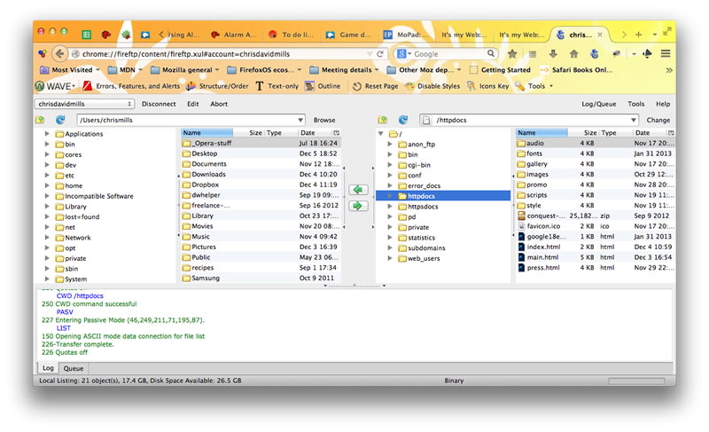

Публикация вашего веб-сайта
После того, как вы закончите писать код и организовывать файлы, которые составляют ваш веб-сайт, вам нужно расположить все это в Интернете, чтобы люди могли найти ваш сайт. В этой статье описывается, как разместить простой пример вашего кода с минимальными усилиями.
Какие существуют варианты?
Публикация веб-сайта это не простая тема, главным образом, потому что существует много различных способов сделать это. В этой статье мы не стремимся документировать все возможные методы. Скорее, мы обсудим плюсы и минусы трёх обширных стратегий с точки зрения новичка, а затем вы пройдёте через один метод, который будет работать в настоящее время.
Получение хостинга и доменного имени
Чтобы иметь больший контроль над контентом и внешним видом веб-сайта, большинство людей предпочитают покупать веб-хостинг и доменное имя:
- Хостинг — арендованное файловое пространство на веб-сервере хостинговой компании. Вы размещаете ваши файлы веб-сайта в этом пространстве, и веб-сервер выдаёт контент для веб-пользователей, которые запрашивают его.
- Доменное имя — уникальный адрес по которому люди могут найти ваш веб-сайт, например
http://www.mozilla.orgилиhttp://www.bbc.co.uk. Вы можете арендовать доменное имя на столько лет, сколько захотите (минимум на 1 год) у регистратора доменов.
Множество профессиональных веб-сайтов располагается в Интернете именно таким образом.
Кроме того, вам потребуется File Transfer Protocol (FTP)-клиент (более подробно см. Сколько это стоит: программное обеспечение), чтобы передать файлы веб-сайта на сервер. Существует множество FTP-клиентов, но, как правило, вам нужно войти на веб-сервер, используя данные, предоставленные вашей хостинговой компанией (например: имя пользователя (логин), пароль, имя хоста). Затем FTP-клиент отобразит файлы на вашем компьютере в одной половине окна и файлы на хостинговом сервере в другой половине, так вы сможете перетаскивая копировать файлы с вашего компьютера на сервер и обратно.
